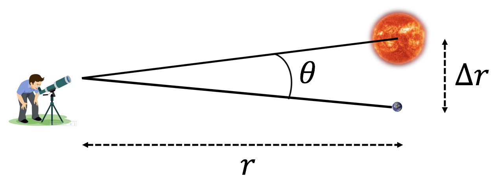

Forrige side🙂 🙁Vinkeloppløsning

Altså Δr ≈ rθ Har du innsett hvordan formelen utledes? Hvis ikke, her er et par hint:
Kan du lage noe som er tilnærmet en rettvinklet trekant her? (dette er en mulig måte å tenke på)
Avstanden Δr er veldig liten (dette er en annen mulig måte å tenke på)
Vinkelen θ er veldig liten!
Hva kan man gjøre når man skal gjøre tilnærminger med veldig små størrelser?
Ikke trykk her før du har en ide: Neste side